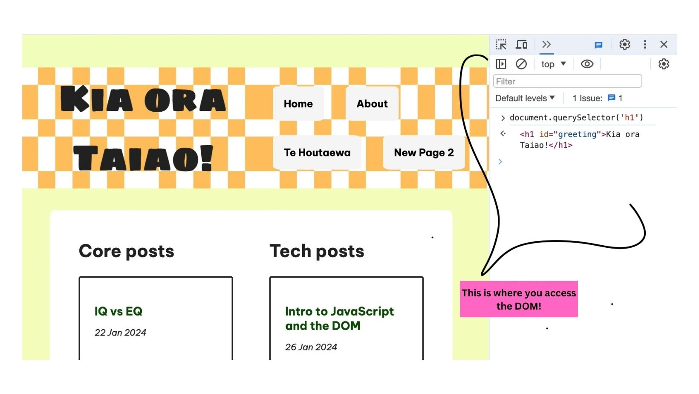

The three main components that make up a webpage are HTML, CSS, and Javascript. All three play crucial yet very different roles in making a website. HTML is what gives a website its structure and content. You can think of it like the builder of a website. A website without CSS is boring and flat. You can think of CSS as the artist that provides all the styling. CSS is what makes a website attractive and appealing. With these two, you can make a pretty decent site. Originally, most websites were composed of just HTML and CSS. However, JavaScript was developed and changed the game. JavaScript is the magical part that makes websites interactive and dynamic. We’ll think of JavaScript as the wizard. If you’ve ever had a pop-up, played music, or had text autofill, then you’ve worked with JavaScript! It’s the wizard that makes things work.
JavaScript may be magical but it needs some help to work. The DOM (Document Object Model) provides a way for Javascript to interact with the HTML parts in a document. The DOM takes a webpage and provides are more simplified view of its hierarchy of structures. It lets JavaScript take hold of different objects and apply actions to them. In the picture, you can see we had the DOM isolate the h1 header on the page and it reads the contents in the console. You need to be able to navigate and control the DOM to use JavaScript in your web pages.
All code follows a script that runs from the top of the page to the bottom of the page. It will do this every time unless you use JavaScript to specifically tell your code it not to. This is where control flow and for loops come in! Control flow dictates that the code has more than one path to follow depending on the situation. Usually, we use conditional statements like “if” statements to achieve this. An if statement presents more than one possibility.
Ex: “If there is food in the house, Dan will cook dinner. Or else, Dan will order take-out.”
In this example, two options are presented: Dan cooking dinner or Dan ordering takeout. These two paths are dependent on there being food in the house to cook. Conditional statements are used throughout the code to direct the computer on multiple paths depending on the situation. There can always be more than two options, it just depends on how many you want to write into your code!
For loops are another way to change the path of the code. Instead of providing the computer with different paths, loops have the computer repeat an action multiple times before continuing down the script. This is useful because it saves you time from having to rewrite code and makes it easier to read! One way you can imagine this is by thinking of Dan making dinner again. Suppose he has vegetables and decides to make a salad.
Instead of giving directions like - “Wash the onion. Wash the lettuce. Wash the tomato. Wash the cucumber” - a for loop would give a singular direction that the computer would repeat multiple times. In this situation, it could look like: “Repeat wash vegetable 4 times”.
Control flow and looping give you the ability to control how the computer reads your code and make it more efficient and dynamic!
Arrays and objects are valuable tools for holding lots of information in JavaScript. Although both are considered to be containers, they work differently. Objects hold information that has specific values. For example, if you were to make an object that held information about the character Harry Potter, you could provide a lot of information using the key and value pairs. Think of the keys as overall labels. Those values are the specific information for that key. In the Harry Potter example, you could have lots of keys like school and house. One of the keys would be school and its value would be Hogwarts. The next key would be house and its value would be Gryffindor. You can also think of it as the contacts app on your phone. You could have lots of different people and when you go into the folders for each person, it has lots of information about them.
Arrays are much simpler than objects but just as valuable. Arrays are like a list that goes in your chosen order. Arrays are useful for gathering and organizing formation together that you want to be readily called upon. One thing to take note of is that in an array, all the items are on the same line and can be called upon by their position in the line. Arrays can be of an infinite length and you can easily pull items out and add items to your array.
Perhaps the most important thing JavaScript can do is perform a function. You can think of a function as storage for an action that can performed again and again. Functions on a website hold actions like logging a user in or flipping through images. Functions do those fun interactive pieces that users work with.
Functions can be quite confusing to code though so it's important to remember that functions have two parts. The first part is declaring the function or “training the function”. Think of it like training a puppy. Dogs don’t automatically know how to sit. You need to give it that information so it knows how to do it. The second part is calling the function. This is essentially performing the trick. When you command the dog to sit, it will/should sit. Now whenever you want that website to do that action all you need to do is tell it. Tell the dog to sit!